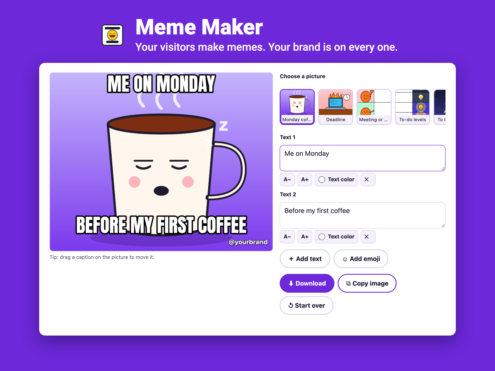
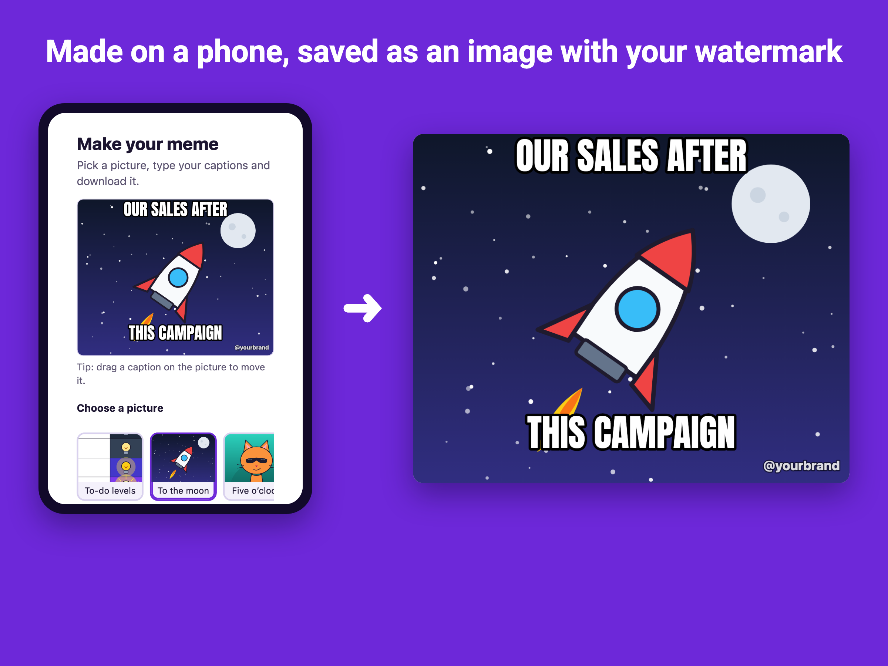

Meme Maker for Wix
A meme generator on your own site. Visitors pick one of your pictures, type their captions and download or share a meme that carries your name.

What visitors can do
- Choose a template, or use their own photo (it stays on their device).
- Type top and bottom captions in the classic meme font, or modern caption-on-top text.
- Add more text and emoji stickers, drag them anywhere, make them bigger or change their color.
- Download a PNG, share it from their phone, or copy it to the clipboard.
What you control
- Seven ready-made packs with original illustrations: office, pets, sports fans, coffee shop, school, Halloween and classic formats.
- Your own images from the media library, captions, fonts, colors and positions, with a live preview.
- A watermark with your website or handle on every image; your logo on Premium.
- A blocked-words list, so your brand never appears next to words you do not want.
- Email before download (Premium): turn a fun widget into a lead magnet, with leads in your Wix contacts.
- Insights on views, downloads, shares and the most popular templates; eight interface languages.

Guides
- How to add a meme generator to a Wix site
- Branded memes: user-generated content for your campaign
- A Halloween meme generator for your site
Questions
Do I need a paid plan?
No. The Free plan includes one live meme generator with up to eight templates, unlimited memes, visitor photos, emoji, a text watermark, blocked words and eight languages. Premium adds more generators and templates, a logo watermark, email before download and removes the credit line.
Are the pictures free to use?
Yes. The built-in templates are original illustrations drawn for the app. You can also add your own images from your Wix media library; use pictures you own, because classic meme photos are usually copyrighted.
Are visitors' photos uploaded?
No. Memes are drawn in the visitor's browser. Captions and photos never leave the device unless the visitor downloads or shares the finished image.
See it in the Wix App Market